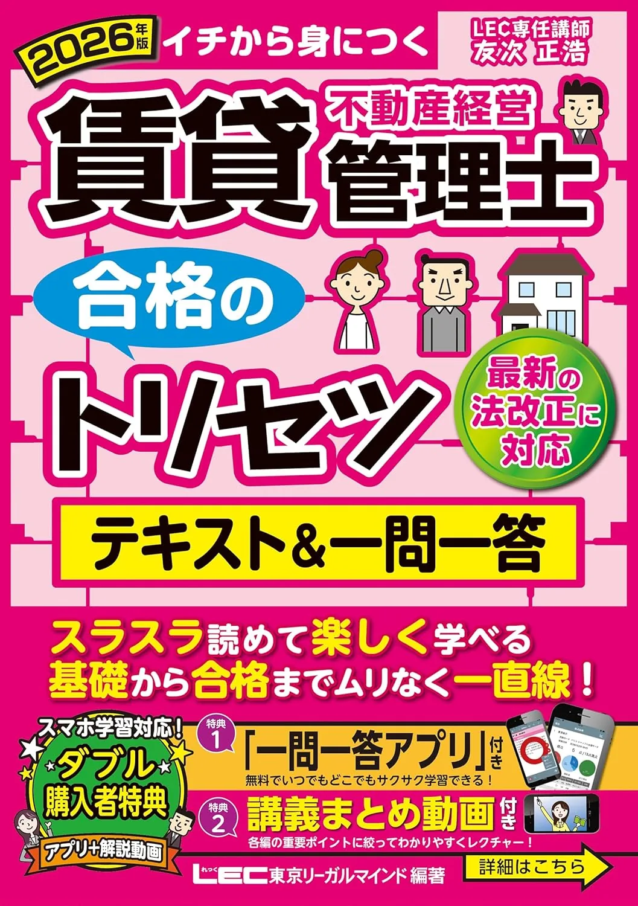

賃貸不動産経営管理士のおすすめテキスト3選【2026年度版・独学】
2026年度版テキスト3冊を、章立て・解説の厚み・演習との相性で比較します。価格・在庫は購入前に各Amazonページでご確認ください。
この記事の要点
本記事を読むと、2026年度版3冊の向き不向きが分かり、たとえば「TAC入門→平日30分×5→8月教科書→9月一問一答→11月50問通し月2回」まで具体例付きで設計できます。
- 「2026年度版 みんなが欲しかった! 賃貸不動産経営管理士 合格へのはじめの一歩」
- 「2026年度版 みんなが欲しかった! 賃貸不動産経営管理士の教科書」
- 「2026年版 賃貸不動産経営管理士 合格のトリセツ テキスト&一問一答」
- 22週逆算
- 2026年度版
この記事の信頼性について
| 執筆 | 賃管マスター編集部（資格学習サイトの編集チーム） |
|---|---|
| 確認 | 公式情報確認担当（公開前に一次情報との照合を行う担当者） |
| 事実確認日 | 2026-06-12 |
| 主な参照元 |
16月開始：22週で1冊を決める3点
テキスト選びは協議会要項確認後の3点チェックから始めます。たとえば6月11日の週末に書店で1章試読——週10時間なら通勤30分×5日＋土曜90分の配分が現実的です。
| 観点 | 確認内容 |
|---|---|
| 出題範囲 | 要項の3分野（法令・契約実務・設備税務）と目次が一致するか |
| 解説量 | 入門から始めるか、本格教科書1冊で完走するか |
| 演習接続 | 同系統の問題集・一問一答に進めるか |
- 初受験で週10時間なら
- TAC入門→8月TAC教科書→9月一問一答
- という2段階が選ばれやすい
3点セットの全体像はテキスト選びのガイド、月次の組み方は学習計画のガイドで11月15日から逆算してください。
おすすめテキスト3選（比較）
価格・在庫・版情報は執筆時点（2026-06-12）のAmazon税込参考です。購入前に必ず販売ページでご確認ください。
| 順位 | 商品名 | 価格（税込参考） | ページ数 | 向いている人 |
|---|---|---|---|---|
| 1 | 2026年度版 みんなが欲しかった! 賃貸不動産経営管理士 合格へのはじめの一歩 | ¥1,430 | 204 | 賃管試験をこれから始め、入門から全体像をつかみたい人 |
| 2 | 2026年度版 みんなが欲しかった! 賃貸不動産経営管理士の教科書 | ¥2,640 | 968 | 解説の厚みで3分野を体系的に学びたい独学者 |
| 3 | 2026年版 賃貸不動産経営管理士 合格のトリセツ テキスト&一問一答 | ¥2,750 | 456 | テキストと一問一答をセットで回したい人 |
2026年度版 みんなが欲しかった! 賃貸不動産経営管理士 合格へのはじめの一歩
- 3分野の輪郭を短時間で把握しやすい入門テキスト
- TAC「みんなが欲しかった」シリーズの定番
- 本格教科書へ進む前の第一歩に向く
2026年度版 みんなが欲しかった! 賃貸不動産経営管理士の教科書
- 法令・契約実務・設備税務を1冊で整理
- TAC一問一答・直前教材と章立ての相性がよい
- 社会人独学のメインテキスト候補

2026年版 賃貸不動産経営管理士 合格のトリセツ テキスト&一問一答
- LEC「合格のトリセツ」で論点整理と演習を両立
- 過去問題集（別冊）へのステップアップがしやすい
- TAC教科書と比較して選びやすい定番
23冊のタイプ別：週次時間の当て方
2026年度版3冊は、週次時間の使い方が異なります。例えば週10時間なら、TAC入門は平日30分×5で6〜7月に全体像、TAC教科書は土曜120分で8〜9月に第1周、LECトリセツは平日45分＋土曜60分でテキストと一問一答を交互に進める設計が向きます。
| タイプ | 向く受験生 |
|---|---|
| TAC入門 | 初学者・3分野の輪郭を先に掴みたい |
| TAC教科書 | 独学本格・解説厚めで1冊完走 |
| LECトリセツ | テキストと一問一答をセットで回したい |
いずれも2026年度版を選び、中古は版・改定年度を必ず確認してください。テキスト決定後は当サイトの過去問演習で3分野別正答率を記録し、弱点2分野が見えた時点でおすすめ問題集の記事を参照してください。
31位 TAC入門：はじめの一歩ルーティン
「2026年度版 みんなが欲しかった! 賃貸不動産経営管理士 合格へのはじめの一歩」（TAC出版・204頁・B5判）は、3分野の輪郭を短時間で把握できる入門テキストです。たとえば火曜・木曜の通勤30分で法令章、土曜60分で当サイト演習10問——という週次ループが定番です。
| 強み | 弱み・注意 |
|---|---|
| TAC一問一答・教科書と縦串◎ | 本番直前の深読みには不向き |
| 204頁で全体像が掴みやすい | 単体では演習量不足 |
| 初学者の第一候補 | 価格はAmazonで要確認 |
8月1日までに入門1周を終え、8月からTAC教科書へ移行する計画が11月15日試験への逆算と相性がよいです。購入前にAmazon販売ページで最新価格・在庫・版を確認してください。
42位 TAC教科書：土曜120分で第1周
「2026年度版 みんなが欲しかった! 賃貸不動産経営管理士の教科書」（TAC出版・968頁・B5判）は、3分野を1冊で体系的に学べる本格テキストです。例えば8月初旬から平日30分で契約実務章、土曜120分で当サイト演習15問——という配分が社会人独学で回しやすいです。
| 強み | 弱み・注意 |
|---|---|
| TAC一問一答・直前教材と縦串◎ | ページ量が多く時間設計が必要 |
| 法令・契約・設備を1冊で整理 | 他社問題集との章ズレ |
| 独学メイン1冊候補 | 価格はAmazonで要確認 |
10月初旬までに第1周を終え、10月から50問120分の通し演習を月2回入れる計画が35/50以上を2回連続で狙う設計と相性がよいです。購入前にAmazon販売ページで確認してください。
53位 LECトリセツ：テキスト＋一問一答セット
「2026年版 賃貸不動産経営管理士 合格のトリセツ テキスト&一問一答」（LEC・456頁・B5判）は、論点整理と短問演習を1冊で回しやすい教材です。たとえば6月中旬から平日30分×5＋土曜90分、3か月で全章1周——というペースが再現しやすいです。
| 強み | 弱み・注意 |
|---|---|
| 過去問題集（別冊）へ接続しやすい | TAC系との混在は復習分散 |
| テキストと一問一答が同梱 | 初受験には情報量が多い場合 |
| ページ数が抑えめ | 価格はAmazonで要確認 |
9月読了後はLEC過去問題集をメイン演習に。10月以降は50問120分の自宅模試を月2回入れ、教材は同時に3冊開かず1フェーズ1冊をテキスト選びのガイドで守ると計画が崩れにくいです。
6よくある質問
テキストは1冊だけで足りますか？
TACとLEC、どちらのテキストがよいですか？
最新年度版は必要ですか？
記事の基本情報
| ジャンル | 独学対策 |
|---|---|
| タグ | 独学 / 参考書 |
公式情報の確認
公式情報の確認：賃貸不動産経営管理士試験の最新情報は、賃貸不動産経営管理士協議会（公式）などの公式情報を必ず確認してください。本人に割り当てられた試験会場は受験票の表記が正本です。